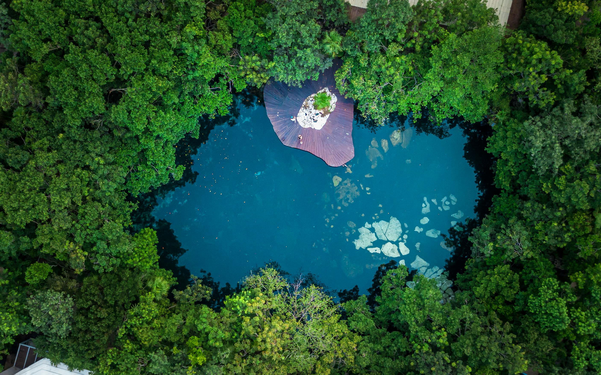

Top Things to See

Chichén Itzá — the great Maya city-state whose El Castillo pyramid rises from the Yucatán jungle, one of the New Seven Wonders of the World

Mexico City's Zócalo — one of the largest plazas on earth, ringed by baroque cathedrals built atop the ruins of Tenochtitlán

The cenotes of the Yucatán — sacred sinkholes of crystal-clear water hidden beneath the jungle, once offerings to the Maya rain god Chaac